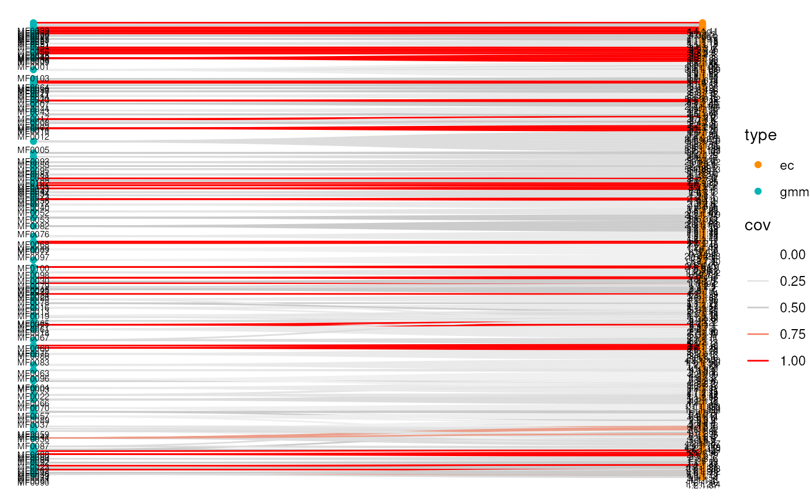

plotSets generates a graph linking origin to target features.
Usage
plotSets(sets, ...)
# S4 method for class 'data.frame'
plotSets(sets, edge.type = "diagonal", show.labels = TRUE, ...)Arguments
- sets
data.frame. A linkmap as returned byweavePathorweaveComplex. Its first and second columns must contain elements to match tokeyand the target sets, respectively.- ...
Additional arguments passed to
ggraph.- edge.type
Character scalarString specifying the type of edge to use from the options available in ggraph (geom_edge_*). (Default:"diagonal")- show.labels
Logical scalar. Whether node labels should be shown. (Default:TRUE)
Examples
library(ggplot2)
graph <- ariadne()
ec2gmm <- weaveComplex(graph, ec ~ gmm)
#> ec -(KEGG)-> ko
#> ko -(GM)-> gmm
plotSets(ec2gmm) + coord_flip()
#> Using "sugiyama" as default layout
